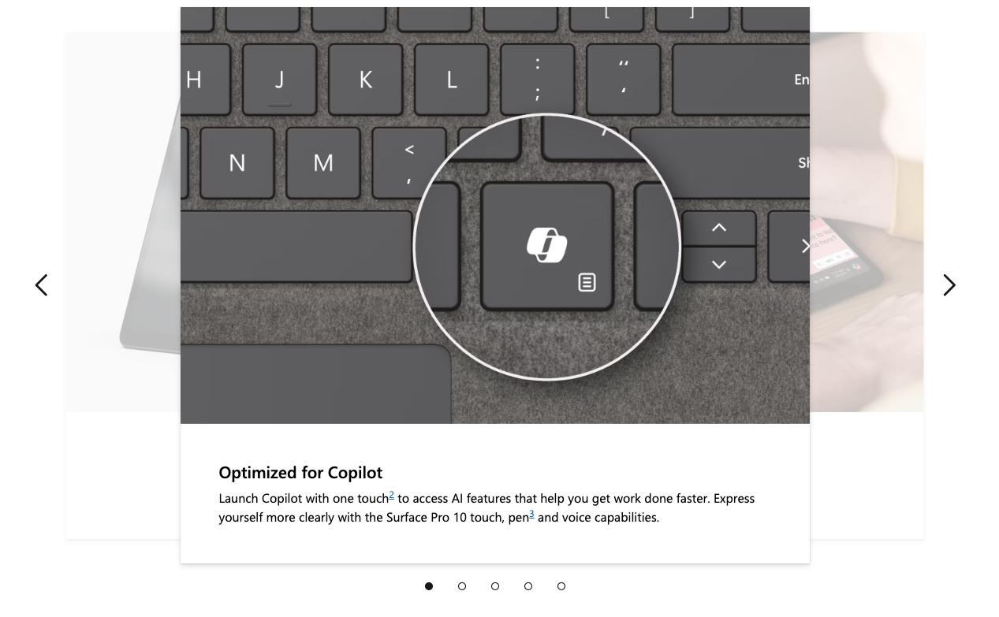

UXE Portfolio Review
Charles Cardinaux
About me

Photo by Stephen Giang, former Microsoft design coworker and photography enthusiast
- UI Engineer at Microsoft since 2019
- Worked on design systems for Microsoft.com
- Passionate about accessibility and building great user experiences
- Outside of work, I love travel and music - I am currently singing with a French choir 🇫🇷 in Seattle
Microsoft.com design systems
| Project | Status | Example | My team |
|---|---|---|---|
| Microsoft Web Framework (MWF) | Legacy | ❌ | |
| MWF Moray | Used in production |

|
✅ |
| Moray Reimagine | Used in production |

|
❌ |
| Reimagine Web Components | New project |
|
✅ |
Today I’ll talk about
something I’ve worked a lot on over the years...
carousels

Example 1: Moray “sneak peek” carousel 🎠
 Legacy MWF
Legacy MWF

Moray (example)
Design provided:
- Comps
- Video of animation
Accessibility required:
- Different interaction pattern from MWF carousel
- New accessibility features like skip links and status message for screenreader users
Engineering process:
- Start with Bootstrap carousel as base (rewritten to remove jQuery dependency and follow Moray standards)
- Leverage existing design system components and layout
- Close coordination with design (especially for animations)
- Frequent accessibility feedback on dev builds
Challenges and considerations:
- Getting the animation right without full specs (just a video)
- Slow animation wayyy down
- Work directly with designer
- Logic of slides in a 3-D space
- Sneak peek experience would require a minimum of 3 slides
- Ensuring touch interactions worked as expected on mobile
- Leveraging Bootstrap was a huge help for this